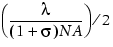

Type: Litho Setup File Keywords. Used by Calibre OPCpro, Calibre ORC, and Calibre PRINTimage.
Controls how sites are rotated on corner fragments.
cornerRadius Radius
The radius in microns. The value must be between 0 and 0.3, inclusive. The default value is

where:
λ is optical model wavelength.
σ is optical model partial coherence.
NA is optical model numerical aperture.
This optional keyword controls how sites are rotated on corner fragments.
A site that is placed within the cornerRadius is placed on the arc defined by cornerRadius and rotated normal to the arc.
If the cornerSiteStyle is set to SITES_ON_ARC, cornerRadius also defines the radius of the inscribed arc. The cornerRadius setting is only in effect when SITES_ON_ARC is used. Otherwise, it is ignored.
The rotation of sites by cornerRadius is independent of convexAdjDist or concaveAdjDist. It depends only on the site being on the radius and lineEndAdjDist.
Changing the placement of corner sites, whether by the CONSERVATIVE, SITES_ON_ARC, or SITES_ON_EDGE site styles, applies only to the fragment that is touching a corner. The convexAdjDist or concaveAdjDist keywords do not apply, except in the following cases:
If the first fragment is not completely inside convexAdjDist or concaveAdjDist, it is not considered a corner fragment and its site is placed in the center. Rotation is not affected by whether a fragment touches a corner or not.
If the radius specified by cornerRadius is > linewidth/2, then cornerRadius is set to linewidth/2.
Generally, set cornerRadius equal to the corner rounding that is considered acceptable after OPC. For example, setting the radius to 0.10 microns instructs Calibre OPCpro to perform corrections such that corners are rounded on an arc of 0.10 microns. An example of this is shown in Figure 1.